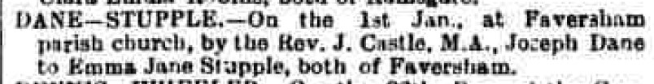
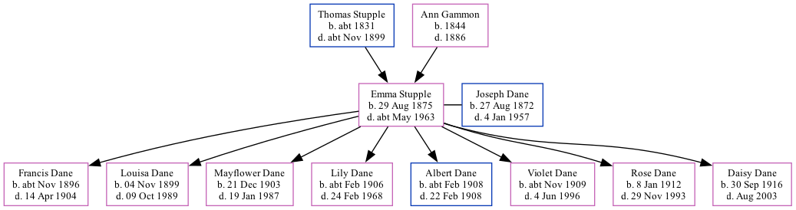

Emma Jane Dane (née Stupple) 1875 - c1963
[ Home ] | [ Calendar ] | [ Surnames Index ] | [ Family History ]A domestic general servant and the daughter of Thomas Stupple (a bricklayer's laborer) and Ann Gammon (a charwoman), Emma Stupple, the first cousin three-times-removed on the mother's side of Nigel Horne, was born in Herne Bay, Kent, England on Aug 29, 18751,2,3, was baptized there at Christ Church on Oct 3, 1875 and married Joseph Dane (a master mariner and licensed victualler with whom she had 8 children: Francis, Louisa Alice Maud, Mayflower, Lily Josephine, Albert, Violet Elizabeth, Rose Victoria and Daisy Lillian) at St Mary Of Charity, Faversham, Kent, England on Jan 1, 18965.
Emma spent all of her life in Kent, England. Throughout her life, she lived in several places around the county: at Nursery Gardens, Herne on Apr 3, 18811; at King Street in Herne Bay on Apr 5, 18917; in Canterbury in 18966; at 3 Danes Cottage in Faversham on Mar 31, 19018; on Two Brewers, 1 Quay Lane in Faversham on Apr 2, 19119; and on 24 South Road in Faversham on Sep 29, 19392.
She died c. May 1963 in Sittingbourne, Kent4.
Parents
- Thomas was born c. 1831
- Ann Maria was born in 1844
Children
- Francis was born c. Nov 1896
- Louisa Alice Maud was born on Nov 4, 1899
- Mayflower was born on Dec 21, 1903
- Lily Josephine was born c. Feb 1906
- Albert was born c. Feb 1908
- Violet Elizabeth was born c. Nov 1909
- Rose Victoria was born on Jan 8, 1912
- Daisy Lillian was born on Sep 30, 1916
Citations
- 1881 England, Wales & Scotland Census - Findmypast (was age 5 and the daughter of the head of the household)
- 1939 Register - Findmypast (was the wife of the head of the household)
- England & Wales births 1837-2006 - Findmypast
- England & Wales deaths 1837-2007 - Findmypast
- England & Wales Marriages 1837-2005 - Findmypast
- British Newspaper Marriage Notices - Findmypast
- 1891 England, Wales & Scotland Census - Findmypast (was age 16 and a boarder in the household)
- 1901 England, Wales & Scotland Census - Findmypast (was age 25 and the wife of the head of the household)
- 1911 Census for England & Wales - Findmypast (was age 36 and the wife of the head of the household)
Media
Canterbury Journal, Kentish Times and Farmers' Gazette January 11, 1896

England & Wales births 1837-2006 - BMD/B/1875/4/AZ/000517/011
England & Wales marriages 1837-2005 - BMD/M/1896/1/AZ/000238/322
Kent, Canterbury Archdeaconry marriages 1538-1928 - GBPRS/CANT/M/97029599/2
England & Wales deaths 1837-2007 - BMD/D/1963/2/AZ/000186/112
1939 Register - TNA/R39/1715/1715G/015/21
1891 England, Wales & Scotland Census - GBC-1891-0005766812
Kent Baptisms - GBPRS/CANT/B/96677619
England Births & Baptisms 1538-1975 - R_884300792
Kent marriages and banns - GBPRS/CANT/M/94026845/2
British Newspaper Marriage Notices - FN-M-6D824028-9527-45E6-9A70-A3618F9F0438
Family Tree
Generated by Ged2Site. Last updated on Jul 20, 2025